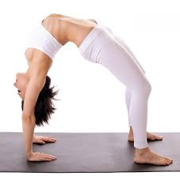
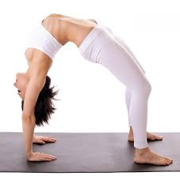

Swimming is a great recreational activity for people of all ages. Recreational swimming can provide you with a low-impact workout and it’s also a good way to relax and feel good. Common swimming styles in recreational swimming are breaststroke, backstroke, side stroke and freestyle.

Learning to cook will bring more to your adult and family life than just about any other skill you can name. There are so many benefits to being good in the kitchen; it’s flabbergasting that people (men, mostly) argue that it’s not worth the time and effort. And hey, look, I used to be one of them. It’s easy to run out and pick something up from the drive-through, or a prepared meal at the store. The truth is, though, I was preventing myself from reaping the almost limitless benefits of learning to cook. Now that I know how to make delicious food, I’m downright evangelical about cooking when I talk to my friends who don’t know their way around the kitchen. All men should learn to cook. Whether you’re a husband, father, single guy, whatever, you should start learning to cook tonight. It will improve your health, your enjoyment of food, your financial situation, and your social situation. Oh, and you will also be able to feed yourself.


Yoga is not a new practice—it has been known to mankind though the ages. Yoga is a group of mental, physical, and spiritual practices that help elevate your mood, cleanse your spirit, invigorate your body, and sharpen your mind. And I am sure those who are addicted to yoga can vouch for that statement.Just a few minutes of practice each day can help you ease out of worries and stresses. If you wish to further reap its rewards, incorporate yoga into your daily routine as it is a powerful way to relieve anxiety and cope with everyday stresses.
 
